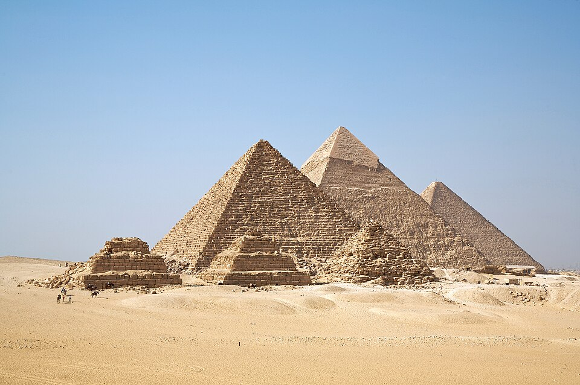

КЕМЕТ
(кеметизм — «вера Чёрной земли» · нетжер nṯr — «божественное»)
«Чёрная земля» — мифология Древнего Египта.
Три тысячи лет верили: порядок держится словом, солнце рождается каждое утро заново, а смерть — только дверь.

Чёрная земля против Красной
Та-Кемет — «чёрная земля» — так египтяне называли свою страну: по плодородному илу, который Нил приносил каждый год. Всё остальное — Дешрет, «красная земля», — была пустыней, чужим и хаосом. Вся их мифология выросла из этой географии: жизнь — из чёрного, смерть и хаос — из красного, а между ними — узкая зелёная полоса порядка, который надо холить каждый день.
Мир египтянина состоял из воды Нуна (её не было — и всё же она была «до» всего), неба Нут, земли Геба и Дуата — того, что под горизонтом и «за» всем сущим. Фараон — не тиран и не полубог в нашем смысле: он шарнир, на котором держится договор людей с богами. Служба в храме — это буквально содержание мира: без ритуала Маат не удержится, а Исфет — хаос — вернётся и сожрёт всё. Боги, чтобы жить, тоже нуждались в помощи. Такой взрослый, взаимный обмен с небом — и есть религия Кемета.
Разделы
Основы мироздания — в шести строках
«Символ не описывает реальность — он её создаёт.»
— главный принцип египетской магии; аналитический материал Шефа от 12.10.2026, положенный в основу этого сайта.